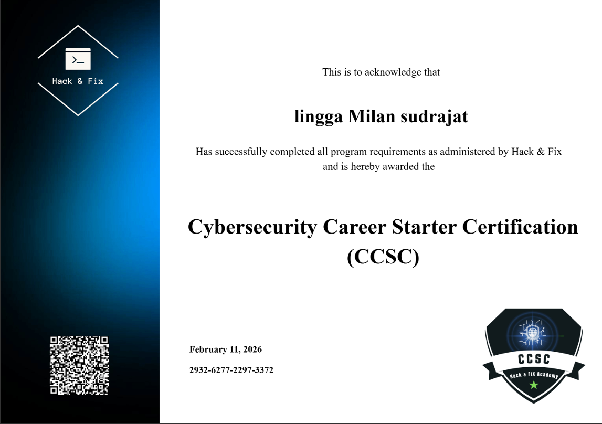
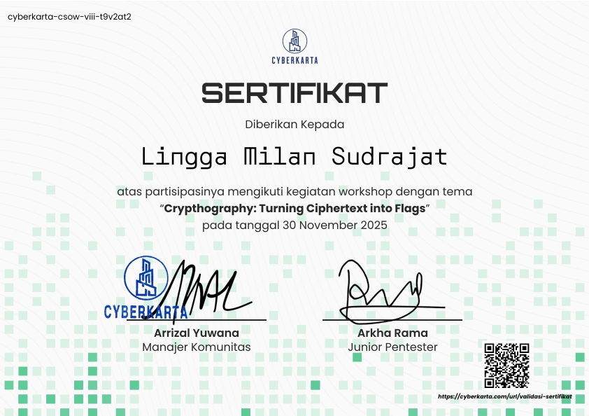

Lingga Milan Sudrajat
Cyber Security Enthusiast
Teknik Jaringan Komputer dan Telekomunikasi (TJKT)
SMK Wikrama Bogor
Teknik Jaringan Komputer dan Telekomunikasi (TJKT)
SMK Wikrama Bogor
Saya adalah siswa TJKT SMK Wikrama Bogor yang memiliki minat besar di bidang Cyber Security, Networking, dan Linux Administration. Saya senang mempelajari keamanan jaringan, analisis kerentanan sistem, serta penerapan teknologi untuk melindungi data dan infrastruktur digital. Saat ini saya terus mengembangkan kemampuan dalam bidang keamanan siber melalui pembelajaran, praktik laboratorium, dan eksplorasi berbagai tools keamanan jaringan.
Anggota aktif OSIS di SMP Negeri 01 Cigombong.
Memimpin dan mengkoordinasi kegiatan ekstrakurikuler Cyber Security di SMK Wikrama Bogor.
Bertanggung jawab atas pelaksanaan kegiatan Wigantara di SMK Wikrama Bogor.

Cyber Security Penetration Testing

Cybersecurity Essentials

Introduction to Cyber Security

Linux Fundamental

System Administration II

CCSC

Cryptography